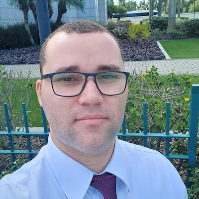

Pedro Pereira | WDD 130

Sou casado, pai de trigêmeos de 13 anos, membro da Igreja de Jesus Cristo dos Santos dos Últimos Dias e conselheiro no bispado da minha ala. Atuo como Sargento da Polícia Militar do Rio de Janeiro há 12 anos e atualmente trabalho no Estado-Maior Geral, no setor de Telemática, responsável pela infraestrutura e segurança de dados da corporação. Sou formado em Educação Física, mas desde jovem atuo na área de informática, o que me levou a cursar Engenharia de Software pela BYU-Idaho (EUA), buscando consolidar minha experiência prática com formação acadêmica. Minha vida é marcada pelo equilíbrio entre família, fé, profissão e estudo, sempre guiada por valores de disciplina, serviço e dedicação.